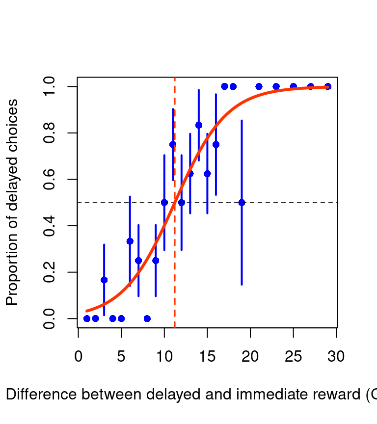
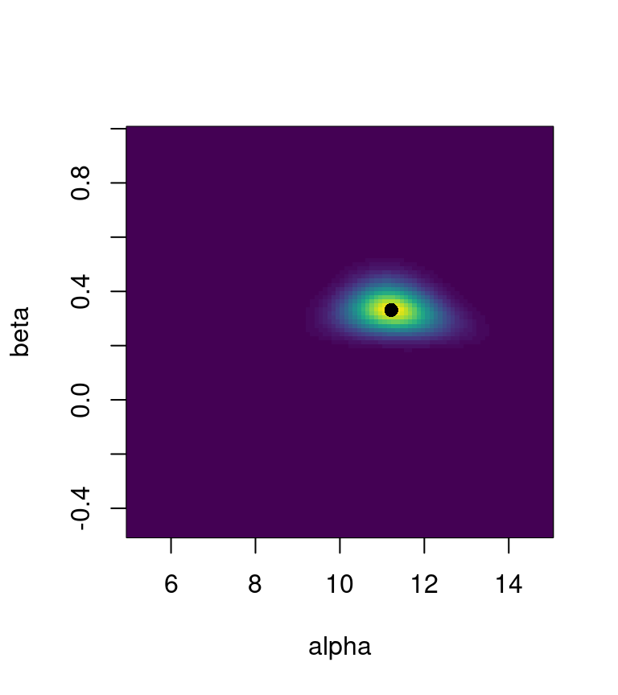

To run this worksheet, make sure your working directory contains the data files like discounting_1sj.csv, which are available on Moodle.
Activity 1 — Visualise the sigmoid function
We start by plotting a logistic (sigmoid) psychometric function and seeing how the two parameters control location (PSE, \(\alpha\) in the formula) and slope (noise, \(\beta\)):
We compute the proportion of delayed choices at each stimulus level, plus the standard error.
Note that the binomial standard error is \(SE=\sqrt{\frac{\hat p (1-\hat p)}{N}}\), where \(N\) is the number of observations, and $p $ is the proportion of ‘successes’.
To fit the model, we can write a set of functions to compute the probability of the data as a function of model parameters, and the use optim() to minimise the negative log-likelihood.
First, a function that give the choice probability as a function of the parameters:
Code
# probability of response r=1 for a logistic psychometric functionp_r1 <-function(x, alpha, beta) {1/ (1+exp(-beta * (x - alpha)))}
Next, a function that, given a set of parameter alpha and beta, compute the log-likelihood of the data (all responses observed). The data is provided by two vectors, x indicating the stimuli values (difference delayes minus immediate reward), and r the responses coded as 0/1 (for choice of immediate/delayed rewards, respectively).
Code
# log-likelihood of the psychometric function defined in p_r1()L_r <-function(x, r, alpha, beta) { p <-p_r1(x, alpha, beta)# avoid overflow in case of log(0) p <-pmin(pmax(p, 1e-12), 1-1e-12)sum(log(p[r ==1])) +sum(log(1- p[r ==0]))}# fit psychometric functionfit_p_r <-function(x, r, alpha0 =mean(x), beta0 =mean(abs(x)) /10) {# objective function to minimise (negative log-likelihood) fun <-function(par) -L_r(x, r, par[1], par[2])# use Nelder-Mead, simimlar to Matlab fminsearch fit <-optim(c(alpha0, beta0), fun, method ="Nelder-Mead")list(alpha = fit$par[1],beta = fit$par[2],L =-fit$value )}
Activity 5 — Fit the model and plot the fitted curve
Code
fit <-fit_p_r(D$diff, D$choose_delayed)alpha_hat <- fit$alphabeta_hat <- fit$beta# plot data againplot(stim, pChooseDelayed, pch =16,col ="blue", xlab ="Difference between delayed and immediate reward (GBP)",ylab ="Proportion of delayed choices", ylim =c(0, 1))abline(h =0.5, lty =2, lwd =0.7)for (cc inseq_along(stim)) {segments(stim[cc], pChooseDelayed[cc] - pChooseDelayed_se[cc], stim[cc], pChooseDelayed[cc] + pChooseDelayed_se[cc],col ="blue", lwd =2)}# add psychometric functionstim_fine <-seq(min(stim), max(stim), length.out =500)pred_prob <-p_r1(stim_fine, alpha_hat, beta_hat)lines(stim_fine, pred_prob, col =rgb(1, 0.2, 0.0), lwd =3)# add line to indicate PSE (point of subjective equality)abline(v = alpha_hat, col =rgb(1, 0.2, 0.0), lty =2, lwd =1.5)

Activity 6 — Parametric bootstrap for confidence intervals
We now simulate data from the fitted model and refit it many times to compute bootstrap confidence intervals. As we are used our fitted parametric model to generate simulated responses, this approach is known as parametric bootstrapping.
A 2D visualisation (heatmap) might provide a more precise interpretation
Code
library(viridis) # for a nice color palette# log-likelihood heatmapimage(alpha_grid, beta_grid, exp(LL),xlab ="alpha", ylab ="beta",col =viridis(50))# mark the fitted parameterspoints(alpha_hat, beta_hat, pch =16, cex =1.2)

Activity 8 — Same model with glm() (for comparison)
We can fit the same logistic model using glm(). The parameterisation is different, but the predicted probabilities are the same.
More specifically, the GLM (generalised linear model) use this parametrisation:
---title: "Analysis of Behaviour --- worksheet"subtitle: "PS5210 25-26"author: "Matteo Lisi"format: html: toc: true code-tools: true # run/copy buttons code-fold: showexecute: echo: true warning: false message: false---To run this worksheet, make sure your working directory contains the data files like `discounting_1sj.csv`, which are available on Moodle.## Activity 1 — Visualise the sigmoid functionWe start by plotting a logistic (sigmoid) psychometric function and seeing how the two parameters control **location** (PSE, $\alpha$ in the formula) and **slope** (noise, $\beta$):$$P(\text{choose delayed})= \frac{1}{1+e^{-\beta(x-\alpha)}}$$```{r, fig.align='center', fig.width=4, fig.height=4.5}# create a grid for xx <- seq(1, 40, length.out = 100)# psychometric functionpsy_fun <- function(x, alpha, beta) { 1 / (1 + exp(-beta * (x - alpha)))}# set parameters for plotting the functionalpha_value <- 15beta_value <- 1# plotplot(x, psy_fun(x, alpha_value, beta_value), type = "l", col = rgb(1, 0.2, 0.0), lwd = 3, xlab = "Stimulus", ylab = "P(choose delayed)")# change alpha, the function moves horizontallylines(x, psy_fun(x, alpha_value + 10, beta_value), col = "blue", lwd = 2)# decrease slope beta, function gets more shallowlines(x, psy_fun(x, alpha_value, beta_value / 10), col = rgb(1, 0.2, 0.0), lwd = 2, lty = 2)```## Activity 2 — Load and plot the stimuliWe use the dataset from a single participant. The csv file `discounting_1sj.csv` use `;` as a separator.```{r, fig.align='center', fig.width=4, fig.height=4.5}D <- read.csv("behaviour_2324/discounting_1sj.csv", sep = ";")# calculate difference between delayed and immediate rewardD$diff <- D$delayed - D$immediate# plot stimuliplot(D$immediate, D$delayed, pch = 16, col = rgb(0, 0, 1, 0.5), xlab = "Immediate reward (GBP)", ylab = "Delayed reward (GBP)", xlim = c(5, 50), ylim = c(5, 50))abline(a = 0, b = 1, lty = 2, lwd = 0.7)```## Activity 3 — Plot raw data (proportions and SE)We compute the proportion of delayed choices at each stimulus level, plus the standard error.Note that the binomial standard error is $SE=\sqrt{\frac{\hat p (1-\hat p)}{N}}$, where $N$ is the number of observations, and $\hat p $ is the proportion of 'successes'.```{r, fig.align='center', fig.width=4, fig.height=4.5}# compute averages and standard errorsstim <- sort(unique(D$diff))nTrials <- rep(NA, length(stim))pChooseDelayed <- rep(NA, length(stim))pChooseDelayed_se <- rep(NA, length(stim))for (cc in seq_along(stim)) { nTrials[cc] <- sum(D$diff == stim[cc]) pChooseDelayed[cc] <- mean(D$choose_delayed[D$diff == stim[cc]]) pChooseDelayed_se[cc] <- sqrt(pChooseDelayed[cc] * (1 - pChooseDelayed[cc]) / nTrials[cc])}# make plotplot(stim, pChooseDelayed, pch = 16, col = "blue", xlab = "Difference between delayed and immediate reward (GBP)", ylab = "Proportion of delayed choices", ylim = c(0, 1))abline(h = 0.5, lty = 2, lwd = 0.7)# add SE barsfor (cc in seq_along(stim)) { segments(stim[cc], pChooseDelayed[cc] - pChooseDelayed_se[cc], stim[cc], pChooseDelayed[cc] + pChooseDelayed_se[cc], col = "blue", lwd = 2)}```## Activity 4 — Create the fitting functionsTo fit the model, we can write a set of functions to compute the probability of the data as a function of model parameters, and the use `optim()` to minimise the **negative** log-likelihood.First, a function that give the choice probability as a function of the parameters:```{r}# probability of response r=1 for a logistic psychometric functionp_r1 <-function(x, alpha, beta) {1/ (1+exp(-beta * (x - alpha)))}```Next, a function that, given a set of parameter `alpha` and `beta`, compute the log-likelihood of the data (all responses observed). The data is provided by two vectors, `x` indicating the stimuli values (difference delayes minus immediate reward), and `r` the responses coded as 0/1 (for choice of immediate/delayed rewards, respectively).```{r}# log-likelihood of the psychometric function defined in p_r1()L_r <-function(x, r, alpha, beta) { p <-p_r1(x, alpha, beta)# avoid overflow in case of log(0) p <-pmin(pmax(p, 1e-12), 1-1e-12)sum(log(p[r ==1])) +sum(log(1- p[r ==0]))}# fit psychometric functionfit_p_r <-function(x, r, alpha0 =mean(x), beta0 =mean(abs(x)) /10) {# objective function to minimise (negative log-likelihood) fun <-function(par) -L_r(x, r, par[1], par[2])# use Nelder-Mead, simimlar to Matlab fminsearch fit <-optim(c(alpha0, beta0), fun, method ="Nelder-Mead")list(alpha = fit$par[1],beta = fit$par[2],L =-fit$value )}```## Activity 5 — Fit the model and plot the fitted curve```{r, fig.align='center', fig.width=4, fig.height=4.5}fit <- fit_p_r(D$diff, D$choose_delayed)alpha_hat <- fit$alphabeta_hat <- fit$beta# plot data againplot(stim, pChooseDelayed, pch = 16, col = "blue", xlab = "Difference between delayed and immediate reward (GBP)", ylab = "Proportion of delayed choices", ylim = c(0, 1))abline(h = 0.5, lty = 2, lwd = 0.7)for (cc in seq_along(stim)) { segments(stim[cc], pChooseDelayed[cc] - pChooseDelayed_se[cc], stim[cc], pChooseDelayed[cc] + pChooseDelayed_se[cc], col = "blue", lwd = 2)}# add psychometric functionstim_fine <- seq(min(stim), max(stim), length.out = 500)pred_prob <- p_r1(stim_fine, alpha_hat, beta_hat)lines(stim_fine, pred_prob, col = rgb(1, 0.2, 0.0), lwd = 3)# add line to indicate PSE (point of subjective equality)abline(v = alpha_hat, col = rgb(1, 0.2, 0.0), lty = 2, lwd = 1.5)```## Activity 6 — Parametric bootstrap for confidence intervalsWe now simulate data from the fitted model and refit it many times to compute bootstrap confidence intervals. As we are used our fitted parametric model to generate simulated responses, this approach is known as _parametric_ bootstrapping.```{r}bootstrap_ci_psy_fun <-function(alpha, beta, stim_levels, nSim =2000) { boot_alpha <-rep(NA, nSim) boot_beta <-rep(NA, nSim) levels_prob <-p_r1(stim_levels, alpha, beta)for (i inseq_len(nSim)) {# the function rbinom is used to simulate binomial responses sim_data <-rbinom(length(stim_levels), 1, levels_prob) fit_i <-fit_p_r(stim_levels, sim_data) boot_alpha[i] <- fit_i$alpha boot_beta[i] <- fit_i$beta }list(alpha =list(CI =quantile(boot_alpha, c(0.025, 0.975)),SE =sd(boot_alpha),boot_alpha = boot_alpha ),beta =list(CI =quantile(boot_beta, c(0.025, 0.975)),SE =sd(boot_beta),boot_beta = boot_beta ) )}set.seed(1)boot <-bootstrap_ci_psy_fun(alpha_hat, beta_hat, D$diff, nSim =2000)boot$alpha$CIboot$beta$CI```For more stable/accurate results, increase the number of simulations (this will take longer):```{r, eval=FALSE}boot <- bootstrap_ci_psy_fun(alpha_hat, beta_hat, D$diff, nSim = 10000)```Add the confidence interval for alpha on the plot:```{r, fig.align='center', fig.width=4, fig.height=4.5}# replot fitted curveplot(stim, pChooseDelayed, pch = 16, col = "blue", xlab = "Difference between delayed and immediate reward (GBP)", ylab = "Proportion of delayed choices", ylim = c(0, 1))abline(h = 0.5, lty = 2, lwd = 0.7)for (cc in seq_along(stim)) { segments(stim[cc], pChooseDelayed[cc] - pChooseDelayed_se[cc], stim[cc], pChooseDelayed[cc] + pChooseDelayed_se[cc], col = "blue", lwd = 2)}lines(stim_fine, pred_prob, col = rgb(1, 0.2, 0.0), lwd = 3)# add CI for alpha on plot (horizontal bar at p = 0.5)segments(boot$alpha$CI[1], 0.5, boot$alpha$CI[2], 0.5, col = rgb(1, 0.2, 0.0), lwd = 7)```## Activity 7 — Visualise the likelihood functionWe compute the log-likelihood across a grid of parameters, then visualise it as a surface.```{r, fig.align='center', fig.width=6, fig.height=6.5}alpha_grid <- seq(5, 15, length.out = 100)beta_grid <- seq(-0.5, 1, length.out = 100)LL <- matrix(NA, nrow = length(alpha_grid), ncol = length(beta_grid))for (i in seq_along(alpha_grid)) { for (j in seq_along(beta_grid)) { LL[i, j] <- L_r(D$diff, D$choose_delayed, alpha_grid[i], beta_grid[j]) }}# likelihood surfacepersp(alpha_grid, beta_grid, exp(LL), theta = 40, phi = 35, xlab = "alpha", ylab = "beta", zlab = "likelihood", shade = 0.6, col = "lightblue", border = NA)```A 2D visualisation (heatmap) might provide a more precise interpretation```{r, fig.align='center', fig.width=4, fig.height=4.5}library(viridis) # for a nice color palette# log-likelihood heatmapimage(alpha_grid, beta_grid, exp(LL), xlab = "alpha", ylab = "beta", col = viridis(50))# mark the fitted parameterspoints(alpha_hat, beta_hat, pch = 16, cex = 1.2)```## Activity 8 — Same model with `glm()` (for comparison)We can fit the same logistic model using `glm()`. The parameterisation is different, but the predicted probabilities are the same.More specifically, the GLM (generalised linear model) use this parametrisation:$$P(\text{choose delayed})= \frac{1}{1+\exp(-(b_0 + b_1x))}$$where $b_0$ is the intercept and $b_1$ the slope.```{r}m_glm <-glm(choose_delayed ~ diff, data = D, family =binomial(link ="logit"))coef(m_glm)b0 <-coef(m_glm)[1]b1 <-coef(m_glm)[2]# match the psychometric parameters# logit(p) = b0 + b1 * x = beta * (x - alpha)alpha_glm <--b0 / b1beta_glm <- b1alpha_glmbeta_glm```If we rewrite the psychometric function as$$P(\text{choose delayed}) = \frac{1}{1 + \exp(-(x - \alpha)/\sigma)}$$then the `glm()` slope corresponds to $1/\sigma$. This means:- PSE (alpha) = `-b0 / b1` (sometimes you see “minus the intercept” when slope is 1)- noise (sigma) = `1 / b1`You can check that the fitted curve from `glm()` overlaps the curve from our custom MLE.```{r, fig.align='center', fig.width=6, fig.height=5.5}# compare fitted curvesplot(stim, pChooseDelayed, pch = 16, col = "blue", xlab = "Difference between delayed and immediate reward (GBP)", ylab = "Proportion of delayed choices", ylim = c(0, 1))abline(h = 0.5, lty = 2, lwd = 0.7)lines(stim_fine, p_r1(stim_fine, alpha_hat, beta_hat), col = rgb(1, 0.2, 0.0), lwd = 2)lines(stim_fine, p_r1(stim_fine, alpha_glm, beta_glm), col = "darkgreen", lwd = 5, lty = 3)legend("topleft", legend = c("MLE (optim)", "glm"), col = c(rgb(1, 0.2, 0.0), "darkgreen"), lwd = c(2, 5), lty = c(1, 2), bty = "n")```